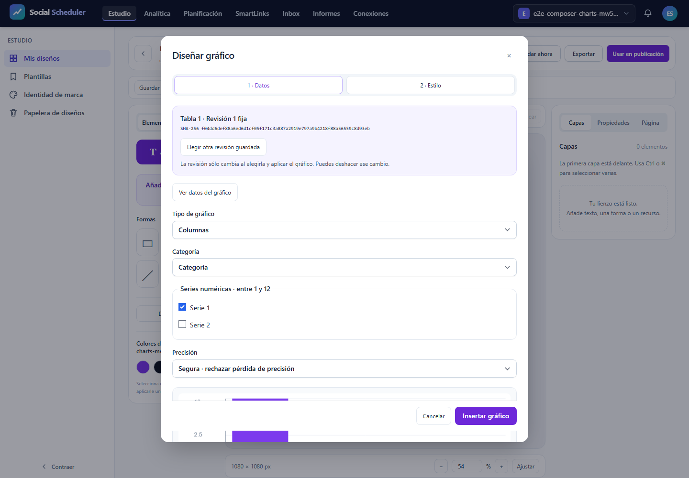

T12: errores y accesibilidad, validación focal
NO-PASS. Casos realmente ejecutados: 1/3; registros del JSON: 3, incluidos los no ejecutados. E2E28.03 previsto íntegro a375/768/1440px, un worker, cero reintentos y fail-fast1. T12 sigue abierta. La inspección de estas figuras/PDF se registra por SHA; no sustituye el resultado automático.
Comprobaciones del escenario
Tabla DOM con tipos y lexemas originales; proporciones negativas bloqueadas; safe/approximate para9007199254740993; estilo guardado/editado e Inspector; teclado, foco visible y restaurado; revisión histórica vacíaB4 fijada a1 mientras la actual2 tiene filas. El test exige ausencia de aplicación tardía tras cancelar una respuesta HTTP real retenida; captura200, bytes/SHA, cancelación y liberación se contrastan con el journal pasivo. No se simula éxito HTTP ni se amplían abortos permitidos.
En un grupo completo se exigen9recibos axe sin violations/incomplete,9capturas,3pruebas de foco/holds/B4/red/viewports y font-responses vacío. El recuento independiente rechaza evidencia faltante, adicional o incoherente. Los campos originales y el gate están junto al informe. Si este intento falla, los pasos no alcanzados continúan pendientes; no se completan con registros ficticios.
Recursos y cierre
Runtime ficticio aislado y sólo loopback, sin .env/DB/proveedor real. Build4 actual antes de ejecutar. Job3GiB COMMIT agregado, preflight físico6GiB, piso3GiB cada100ms, PHP256MiB/Node512MiB; plazo único900s incluyendo clausura. Pico del núcleo 737357824B, duración 16.033s, mínimo físico 7535910912B. Fallo de recursos: None. Clausura registrada por separado; plazo global 16.275761099997908s. Procesos propios cerrados y8080IPv4/IPv6libres. PDF posterior en Job separado. 417fuentes comprobadas antes/después y trasPDF.
Alcance pendiente
Este resultado no acredita SVG/PNG/PDF exportados, fuente privada, densidad, otras variantes o familias, AV o el roadmap completo. Servidor tiene su informe independiente; no se agregan JSON con huellas distintas para inventar12casos. El títuloY pequeño sigue como corrección visual pendiente. La aceptación funcional de este escenario no equivale a aprobación visual de toda la interfaz.
Resultado y antecedentes
desktop: Error: expect(received).toEqual(expected) // deep equality
- Expected - 1
+ Received + 549
- Array []
+ Array [
+ Object {
+ "description": "Ensure the contrast between foreground and background colors meets WCAG 2 AA minimum contrast ratio thresholds",
+ "help": "Elements must meet minimum color contrast ratio thresholds",
+ "helpUrl": "https://dequeuniversity.com/rules/axe/4.10/color-contrast?application=playwright",
+ "id": "color-contrast",
+ "impact": "serious",
+ "nodes": Array [
+ Object {
+ "all": Array [],
+ "any": Array [
+ Object {
+ "data": Object {
+ "contrastRatio": 0,
+ "expectedContrastRatio": "4.5:1",
+ "fontSize": "10.5pt (14px)",
+ "fontWeight": "normal",
+ "messageKey": "bgImage",
+ },
+ "id": "color-contrast",
+ "impact": "serious",
+ "message": "Element's background color could not be determined due to a background image",
+ "relatedNodes": Array [
+ Object {
+ "html": "<select data-v-d7a4d025=\"\" class=\"field\">",
+ "target": Array [
+ ".chart-label:nth-child(3) > select",
+ ],
+ },
+ ],
+ },
+ ],
+ "failureSummary": "Fix any of the following:
+ Element's background color could not be determined due to a background image",
+ "html": "<select data-v-d7a4d025=\"\" class=\"field\">",
+ "impact": "serious",
+ "none": Array [],
+ "target": Array [
+ ".chart-label:nth-child(3) > select",
+ ],
+ },
+ Object {
+ "all": Array [],
+ "any": Array [
+ Object {
+ "data": Object {
+ "contrastRatio": 0,
+ "expectedContrastRatio": "4.5:1",
+ "fontSize": "10.5pt (14px)",
+
desktop: Error: expect(received).toHaveLength(expected)
Expected length: 1
Received length: 0
Received array: []
El intento conserva sus fallos originales y los pasos no alcanzados; no se relajan las aserciones.
Evidencias visuales
images/1440-test-failed-1.png
